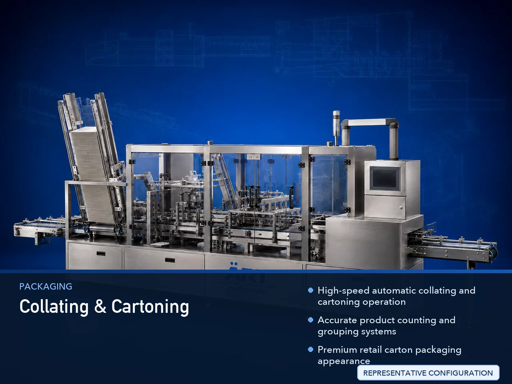

Collating & Cartoning Machine (Automatic Product Collating & Carton Packing System)
A Collating & Cartoning Machine, also known as an Automatic Collating Machine, Product Grouping & Cartoning Machine, Carton Packing Machine, or Secondary Packaging Automation System, is an advanced industrial packaging solution designed for automatic product counting, grouping, stacking,…

About the Collating & Cartoning
Collating and cartoning systems are widely used for: ✔ Sachet collating and cartoning ✔ Pouch grouping and carton packing ✔ Tobacco pack cartoning ✔ FMCG secondary packaging ✔ Retail-ready packaging ✔ Mono carton packaging ✔ Bulk retail carton packing ✔ Continuous industrial packaging operations
The machine improves: ✔ Packaging speed ✔ Product grouping accuracy ✔ Packaging consistency ✔ Product protection ✔ Retail presentation ✔ Production efficiency ✔ Labor productivity
Industrial collating & cartoning machines use: ✔ Servo synchronized conveyor systems ✔ Automatic counting and grouping mechanisms ✔ PLC and HMI automation controls ✔ Precision carton handling systems ✔ High-speed carton filling and sealing mechanisms
to automatically collate products into predefined quantities and pack them into cartons with superior packaging quality and high production efficiency.
Collating & cartoning machines are widely used in industries such as:
Pan masala industries Mouth freshener industries Shisha tobacco industries Cigarette industries Food processing industries FMCG industries Pharmaceutical industries Cosmetic industries
where automated secondary packaging and high-speed product handling are essential.
The machine is highly suitable for: ✔ Sachet collating and cartoning ✔ Pouch grouping systems ✔ Tobacco pack carton packing ✔ Mono carton filling ✔ FMCG secondary packaging ✔ Retail product grouping and packing
ART Mechatronics offers high-performance collating & cartoning machines, engineered for continuous industrial operation, accurate product handling, premium packaging quality, and reliable long-term packaging automation.
Working Principle of Collating & Cartoning Machine
- 1. Product Feeding Products are fed through synchronized conveyor systems.
- 2. Product Counting & Collating Process Machine automatically counts, arranges, groups, and collates products into predefined quantities.
Servo synchronization ensures smooth product handling and accurate grouping operations.
- 3. Carton Feeding & Erection Flat cartons are automatically picked, erected, and positioned for filling operations.
- 4. Product Loading & Carton Filling Machine handles: ✔ Sachets ✔ Pouches ✔ Tobacco packs ✔ Cigarette packs ✔ FMCG products ✔ Pharmaceutical products ✔ Cosmetic products
accurately and continuously.
- 5. Carton Sealing & Coding Process Machine performs: Flap folding Glue sealing Tuck-in sealing Batch coding Barcode printing
for premium retail packaging quality.
- 6. Finished Carton Discharge Finished cartons discharged automatically for: Case packing Palletizing Dispatch operations Retail distribution
Types of Collating & Cartoning Machines
- 1. Sachet Collating & Cartoning Machine Designed for: ✔ Sachet grouping and carton packing applications
- 2. Pouch Grouping Cartoning Machine Suitable for: ✔ Pouch bundling and secondary packaging systems
- 3. Tobacco Pack Cartoning Machine Uses: ✔ Cigarette and shisha tobacco carton packaging systems
- 4. FMCG Collating Machine Designed for: ✔ Retail-ready FMCG packaging applications
- 5. Servo Driven Cartoning Machine Suitable for: ✔ Precision high-speed cartoning operations
- 6. Fully Automatic Collating & Cartoning System Designed for: ✔ Complete industrial secondary packaging automation lines
Industries Using Collating & Cartoning Machines
🌿 Pan Masala & Mouth Freshener Industry Sachet and pouch grouping with mono carton packaging systems. 🚬 Tobacco Industry Cigarette packs, shisha tobacco packs, oral nicotine products, and smokeless tobacco carton packaging systems. 🛒 FMCG Industry Retail product collating and secondary packaging systems. 🍃 Food Processing Industry Snack pouch grouping and carton packaging systems. 💊 Pharmaceutical Industry Medicine box grouping and healthcare packaging systems. 🧴 Cosmetic Industry Cosmetic product collating and carton packaging systems.
Features & Advantages
✔ High-speed automatic collating and cartoning operation ✔ Accurate product counting and grouping systems ✔ Premium retail carton packaging appearance ✔ PLC and servo automation control systems ✔ Improves packaging consistency and productivity ✔ Reduces packaging wastage and labor dependency ✔ Supports multiple carton sizes and product formats ✔ Reliable long-term industrial performance ✔ Smooth and continuous packaging operation
Technical Highlights
Machine Type: Automatic collating machine Cartoning machine Secondary packaging automation system Packaging Material: Mono cartons Paperboard cartons Retail cartons Feeding Integration: Automatic conveyor systems Servo product handling systems Grouping and counting systems Features: PLC control system Servo synchronization Touchscreen HMI Batch coding integration Barcode printing system Sealing Type: Glue seal Tuck-in seal Flap locking system Automation: Semi-automatic Fully automatic industrial systems
Turnkey Collating & Cartoning Solutions
ART Mechatronics offers: Complete collating and cartoning systems Automatic product grouping solutions Packaging automation integration systems Conveyor synchronization systems Installation & commissioning After-sales service & AMC
Why Choose Art Mechatronics
Expertise in industrial packaging and automation systems Customized collating & cartoning solutions for multiple industries High-performance and durable packaging technology Advanced PLC and servo automation systems Proven industrial packaging performance across sectors
Applications
Pan Masala Manufacturing Plants Shisha Tobacco Packaging Units FMCG Packaging Facilities Food Processing Industries Pharmaceutical Manufacturing Plants Cosmetic Packaging Industries
Get pricing & specs for the Collating & Cartoning
Share the product, target capacity, current process and plant location. These details help our engineers discuss the right machine or line configuration.
One partner, from design to start-up
ART Mechatronics designs, manufactures, installs and commissions your Collating & Cartoning solution with regional presence in India, UAE and Thailand.